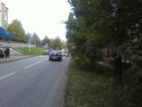
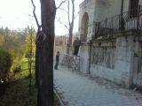
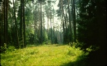

{kind=link}
{kind=link}

Страницы авторов "Тёмного леса"
Пишите нам! temnyjles@narod.ru
Фотоальбом "Облик Кисловодска в прошлом"
Страница журнала "Литературный Кисловодск"
Страницы авторов "Литературного Кисловодска"
Страница Любови Трайдук, кисловодского краеведа
Страница Вячеслава Яновского, кисловодского краеведа
Страница Алексея Травкина, кисловодского краеведа и художника
Евгений Бригиневич. Кисловодску - 200 лет!
Норик Степанович Искандарян (1907 - 2002)
О.Г. Соловьев (1935 - 2004). Воспоминания. (опубликовано в "Континенте", N18)
Евгений Бригиневич. История печатного дела Кисловодска
Евгений Бригиневич. Архитектура старого Пятигорска
Кисловодск в поэзии России (составитель Евгений Бригиневич)
Летопись литературного Пятигорья (на сайте Пятигорской библиотеки)
Интернет-газета "Наш Кисловодск" (сайт кисловодских журналистов)
Форум старинной архитектуры Кавказских Минеральных Вод


ул.Куйбышева (бывшая Кирпичная)
ул.Ленина (бывшая Колюбакинская)



Последнее изменение страницы 25 Nov 2021